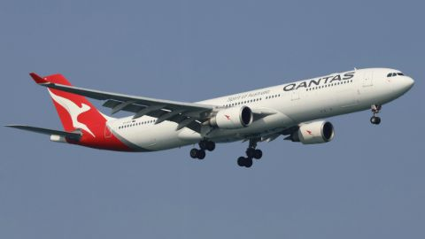

Empresa
Aerolínea con sede en Australia. Fundada en 1920. Entre sus bases de pilotos están Brisbane (BNE), Melbourne (MEL) y Sydney (SYD). Su flota incluye el A380, el B787-9 y el A321XLR.
Información de la aerolínea2 datos · Flota · Fuentes
- Fundación
- 1920
- Sede
- Australia5 de noviembre de 2021
FlotaTipos de aeronave que indica la aerolínea
- A380
- B787-9
- A321XLR
- A330-200
- A330-300
- B737-800
FuentesQantas “Our history”Qantas “Qantas Constitution”Qantas “About us”Qantas “Airbus A321XLR” (página de flota)Qantas “Airbus A330” (página de flota)Qantas “Boeing 737” (página de flota)